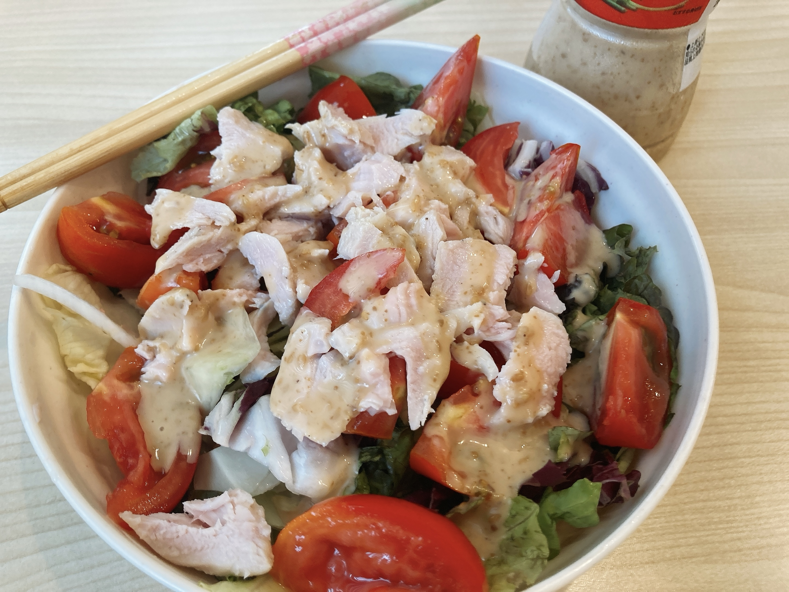
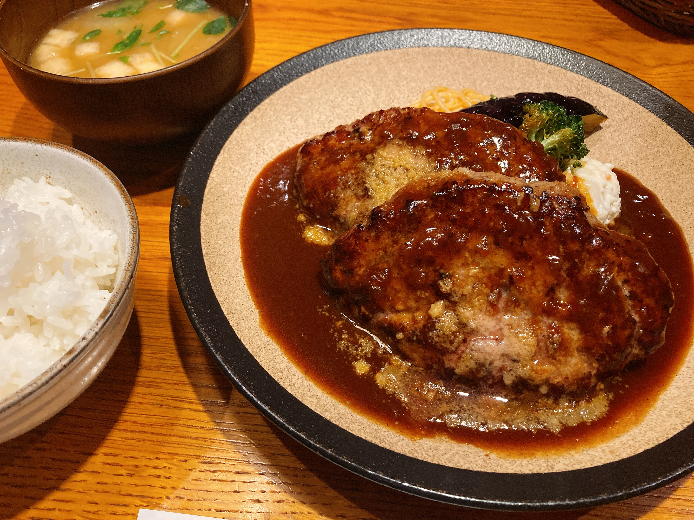

なにかの計画を立てると無限に時間吸われるよね
夏休みが楽しみです。はい、まだ始まってないです。まだなの？……はい。
今年の夏休みはディスプレイ追加+自作PCに伴う自室作業環境の大幅改変が予定されてて、今は購入するものを検討している真っ最中。これだから課題が進まない夏休みが始まらない。でも楽しいから仕方ない1。
詳細はおいおいここで報告していくつもりですが、買おうと思っているもののうちの1つにマイクがあります。食事しながら通話するのを要求される場面が増えて、ミュートオンオフ設定を繰り返すのが面倒なので、アームがみゅーんって伸びてるタイプのマイクがほしい。それで物理的な距離でなんとかしたい。
最後切れちゃったけど運指これ pic.twitter.com/DSUBSaqKNB
— ₍₍⁽⁽🍳₎₎⁾⁾ (@sal_pipr) August 8, 2021
それでなんでいきなり音ゲー？
というのがですね、マイクアームを購入するとそれにスマホをくっつけられるかもしれないといううれしいお話があるのです。この動画はいつぞやに買った柔らかい素材をうにうに曲げてなんとかするタイプのスマホスタンド使って撮ってるんですけど、こいつ安定しないしスマホの重さで傾いてくるしで使い物にならないんですね。それがマイクをお呼びするともっとかっちりしたアームでスマホを固定できて動画が撮れまくるかもしれないという。やった〜一石二鳥。楽しみー。
ダンマクカグラはまだEXTRAのFC埋め最中でLUNATICをちゃんと触ってないけど、この子だけあまりにも原曲が有名過ぎて既に知ってたのでちまちまスコア詰めてる。繋がりづらいのはともかくとして、開幕トリルの精度が安定しなくてやだなあ。このゲーム、EXTRAでも何曲か青緑の複合で青の終端判定逃しまくるのがあるのでつらい。deemo勢は長押しできないんですよ。
今日から正式な夏休み期間ということでラジオ体操が本格始動した。雨だったのでオンライン通話で参加。小学生の時にこれがあれば……。スタンプカードを作ると言っていた存在が初日から絶起してて、果たしてどうなるんやら。
今日の昼飯はちょっとスペシャル。

数日前紹介したサラダに切ったトマトとレンチンささみサラダチキンを乗っけたもの。美味い。このサラダチキンは作り置きしているので、2日目以降は袋を開封してトマトとささみを切るだけ調理時間5分という驚異。しばらくこれで生きていこうと思う。やっぱトマトって天才なんだよな。
今日のおえかき。
お散歩 pic.twitter.com/FkaN6iWA0d
— ₍₍⁽⁽φ( '༥' )₎₎⁾⁾ (@slpp_bild) August 8, 2021
久しぶりの🦉ちゃん。🦉ちゃんにしろ😮ちゃんにしろ、3人組の3人目のキャラデザをめちゃくちゃ描きづらいタイプにしてしまう呪いにかかってるらしい。夏の間に練習しておきたい。
今日なんかやたら書くこと多いな。最後は夕飯。ひょんなことから山本のハンバーグに。

お財布的にはお昼に行くのをおすすめするけど、米が美味いしブロッコリーが美味いし茄子が美味いしポテサラが美味いしで天才なのでとにかく一度行ってみるべき。え、ハンバーグはって？わざわざ私が言わなくたってわかりきってるでしょう。
テイクアウトの弁当はおおお内で価格と質ともに最高クラス。なんかおめでたいことがあった日はぜひここに課金するとよいよ。
早いもんでこの日記ももう一週間らしいです。夏休みまだだけど。記事一覧ページの表示数を7に設定したので、一週間がわかりやすくてよい。さてこの調子でいつまで続くかしら。
-
落単だけはなんとか回避してもろて。 ↩︎